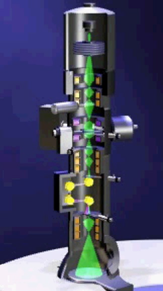
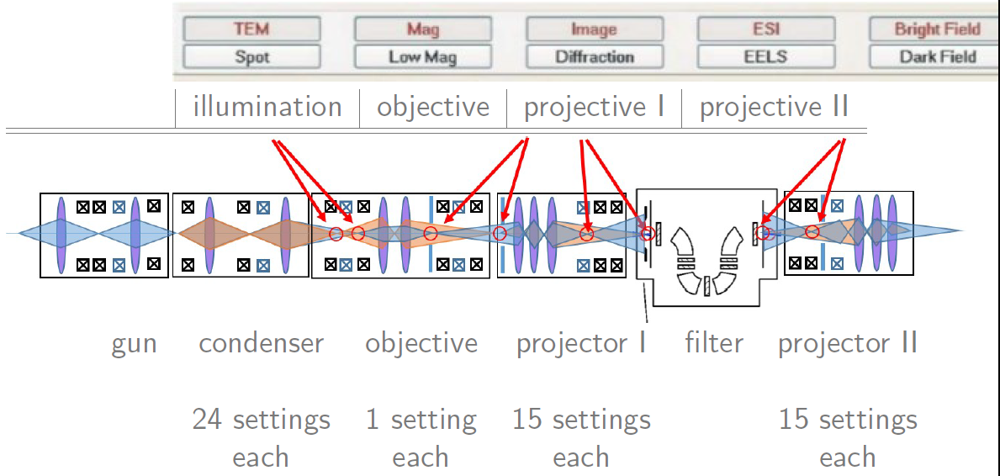
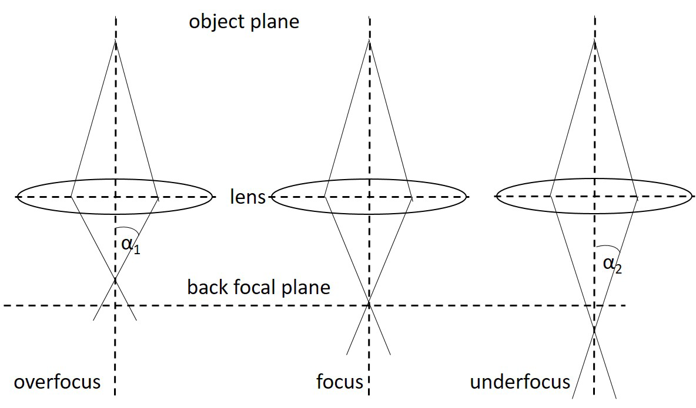

Electron Optics¶

part of
MSE672: Introduction to Transmission Electron Microscopy
Spring 2026 by Gerd Duscher
Microscopy Facilities Institute of Advanced Materials & Manufacturing Materials Science & Engineering The University of Tennessee, Knoxville
Import packages for figures and¶
Check Installed Packages¶
[2]:
import sys
import importlib.metadata
def test_package(package_name):
"""Test if package exists and returns version or -1"""
try:
version = importlib.metadata.version(package_name)
except importlib.metadata.PackageNotFoundError:
version = '-1'
return version
if test_package('pyTEMlib') < '0.2026.1.2':
print('installing pyTEMlib')
!{sys.executable} -m pip install --upgrade pyTEMlib -q
print('done')
done
Load the plotting and figure packages¶
Note for Google Colab
The runtime has to be restarted and the code cell below again to enable interactive plotting
in the Menu Runtime choose Restart Runtime (Ctrl-M)
[1]:
%matplotlib widget
import matplotlib.pylab as plt
import numpy as np
import sys
if 'google.colab' in sys.modules:
from google.colab import output
output.enable_custom_widget_manager()
import pyTEMlib.animation as animate
Transmission Electron Microscope¶
A TEM is a stack of electro-optical elements:

electron source
electrostatic lens
accelerator
magnetic lens
magnetic and electrostatic deflectors
magnetic multipoles
apertures
detectors (viewing screen,CCD)
sample holder
Start screen on the computer of our TEM: Thermo-Fisher Spectra 300¶

The big buttons on upper left, we saw already in the last notebook.
You select the different modes of the TEM with those.

Electron Optics - Overview of the Whole System¶
We start on the top.
The electron gun produces the electrons, focuses them and accelerates them.
The condenser lens system varies the beam size, the illumination area and the convergence angle.
The objective lens does the maximum magnification in imaging mode.
The Intermediate lens system switches between imaging and diffraction mode. The objective lens does not magnify anything in diffraction mode, because the back focal plane of the objective lens is object plane of the intermediate plane. The intermediate lens does the maximum magnification.
The projector lens system magnifies everything roughly to the magnification indicated on the display/chosen on the console.
Electron Optics - Condenser¶
The electron optics starts at the cross over which the gun produces in the differential pumping aperture. Then we have a condenser lens system with three lenses, three pairs of deflectors, a pair of stigmators and an aperture.
This allows a very flexible illumination of the specimen.
Electron Optics - Projective¶
The projector lens system in our TEM (Zeiss Libra 200MC) is divided by the electron energy-loss filter into two parts.
The first part switches from imaging to diffraction and does all the magnification. This part has three lenses, two pairs of deflectors, a stigmator, and an aperture.
The second part switches from spectroscopy to imaging or diffraction and does only magnification in spectroscopy mode. This part has three lenses, two pairs of deflectors, a stigmator, and an aperture.
Electron Optics - Ray Diagrams¶
To do the optical ray diagram we only have to concern ourselves with the lenses and the apertures.
Deflectors and stigmators (correcting multipoles) are only used to correct for mechanical misalignment of the optical axis. The correcting multipoles will be discussed in the phase contrast part of this lecture. The deflectors will be discussed in the STEM part in detail.
Basic Ray Diagram¶
[3]:
# ---INPUT------ #
focal_length = 0.5
# -------------- #
animate.geometric_ray_diagram(focal_length)
A lens is determined by:
focal plane
object plane
image plane
Magnification¶
[7]:
# ---INPUT------ #
focal_length = 1.
# -------------- #
animate.geometric_ray_diagram(focal_length, magnification=True)
The magnification of a lens is given by Newton’s law:
The magnification M is defined as
Focus¶
The microscope consists of a stack of lenses in which the image plane of one lens is the object plane of the next one.
The focal length \(f\) of a magnetic lens can be changed by its electric current.
If the field is too weak, we call it underfocus, is it too strong we speak of overfocus.

Condenser Ray Diagram¶
Below is a stack of lenses that is equivalent to the condenser lens system on the Libra 200.
The objective lens focal length is usually not changed (at least not much), and the sample is in the middle of the objective lens system.
Change the focal lengths parameters so that there the illumination changes from parallel to convergent.
Tip: do not change the gun (first value), and the objective (last two values) values.
[6]:
# ------ INPUT ------#
focal_lengths = np.array([50.0, 70.0, 378.0, 127.0 , 50, 50]) # Slightly convergent
#--------------------#
# Define lenses here
lens_labels = ['Gun', 'C1', 'C2', 'C3' , 'Objective', '']
lens_positions = np.array([200.0, 400.0, 600.0, 800.0, 1100,1200 ]) # lens positions
animate.propagate_beam([0,],1, 3, lens_positions, focal_lengths, lens_labels, 'blue')
If you select any mode, magnification or brightness, the computer looks up a dataset and provides the stored values of currents to the respective lenses and other optical elements.
An engineering alignment determines those values and users only have to deal with the fine-tuning of the electron optical system.
Convergence Angle¶
The condensor lens system defines the illumination of the sample and with it the convergence angle (even parallel illumination has ususally a convergence angle of a few \(\mu\)rad).
The convergence angle is set by the condenser lens system and can be measured with a convergent beam electron diffraction (CBED) pattern.
Under plane wave illumination the diffraction pattern consists of points. If you imagine a second incident plane wave with some angle to the first one, there will be two slightly shifted diffraction patterns made out of points.
A lot of plane waves with a conical angle distribution will result in small circles instead of a point. The radius of the circle corresponds to the convergence angle. One can easily calculate the convergence angle from a CBED pattern of a known sample.
Summary Ray Optics of TEM¶
Lenses provide illumination and magnification
Lenses switch modes in a TEM
Lenses allow to select the angles within a TEM
Apertures help to select the information projected in a TEM
A detailed understanding of the angles within the TEM allows for a project oriented experimental setup.
Appendix:¶
Code for condenser stack ray diagram¶
[7]:
# ----------------------------------------------------------------
# Modified from Michael Fairchild :simply draws a thin-lens at the provided location parameters:
# - z: location along the optical axis (in mm)
# - f: focal length (in mm, can be negative if div. lens)
# - diam: lens diameter in mm
# - lens_labels: label to identify the lens on the drawing
# ----------------------------------------------------------------
def add_lens(z, f, diam, lens_labels):
"""add lens to propagate beam plot"""
ww, tw, rad = diam / 10.0, diam / 3.0, diam / 2.0
plt.plot([z, z], [-rad, rad], 'k', linewidth=2)
plt.plot([z, z + tw], [-rad, -rad + np.sign(f) * ww], 'k', linewidth=2)
plt.plot([z, z - tw], [-rad, -rad + np.sign(f) * ww], 'k', linewidth=2)
plt.plot([z, z + tw], [rad, rad - np.sign(f) * ww], 'k', linewidth=2)
plt.plot([z, z - tw], [rad, rad - np.sign(f) * ww], 'k', linewidth=2)
plt.plot([z + f, z + f], [-ww, ww], 'k', linewidth=2)
plt.plot([z - f, z - f], [-ww, ww], 'k', linewidth=2)
plt.text(z, rad + 5.0, lens_labels, fontsize=12)
plt.text(z, rad + 2.0, 'f=' + str(int(f)), fontsize=10)
def add_aperture(z, diam, radius, lens_labels):
"""add aperture to propagate beam plot"""
ww, tw, rad = diam / 10.0, diam / 3.0, diam / 2.0
radius = radius / 2
plt.plot([z, z], [-rad, -radius], 'k', linewidth=2)
plt.plot([z, z], [rad, radius], 'k', linewidth=2)
plt.text(z, -rad - 2.0, lens_labels, fontsize=12)
def propagate_beam(source_position, numerical_aperture, number_of_rays, lens_positions, focal_lengths,
lens_labels='', color='b'):
"""geometrical propagation of light rays from given source
Parameters
----------
source_position: list
location of the source (z0, x0) along and off axis (in mm)
numerical_aperture: float
numerical aperture of the beam (in degrees)
number_of_rays: int
number of rays to trace
lens_positions: numpy array
array with the location of the lenses
focal_lengths: numpy array
array with the focal length of lenses
lens_labels: list of string
label for the nature of lenses
color: str
color of the rays on plot
"""
plt.figure()
z_max = 1600.
# aperture (maximum angle) in radians
apa = numerical_aperture * np.pi / 180.0
for i in range(np.size(lens_positions)):
add_lens(lens_positions[i], focal_lengths[i], 25, lens_labels[i])
add_aperture(840, 25, 7, 'CA')
# position of source is z0,x0
z0 = source_position[0]
if np.size(source_position) == 2:
x0 = source_position[1]
else:
x0 = 0.0
# list of lens positions
zl1, ff1 = lens_positions[(z0 < lens_positions)], focal_lengths[(z0 < lens_positions)]
nl = np.size(zl1) # number of lenses
zz, xx, tani = np.zeros(nl + 2), np.zeros(nl + 2), np.zeros(nl + 2)
tan0 = np.tan(apa / 2.0) - np.tan(apa) * np.arange(number_of_rays) / (number_of_rays - 1)
for i in range(number_of_rays):
tani[0] = tan0[i] # initial incidence angle
zz[0], xx[0] = z0, x0
for j in range(nl):
zz[j + 1] = zl1[j]
xx[j + 1] = xx[j] + (zz[j + 1] - zz[j]) * tani[j]
tani[j + 1] = tani[j] - xx[j + 1] / ff1[j]
zz[nl + 1] = z_max
xx[nl + 1] = xx[nl] + (zz[nl + 1] - zz[nl]) * tani[nl]
plt.plot(zz, xx, color)
plt.axis([-20, z_max, -20, 20])
[ ]: